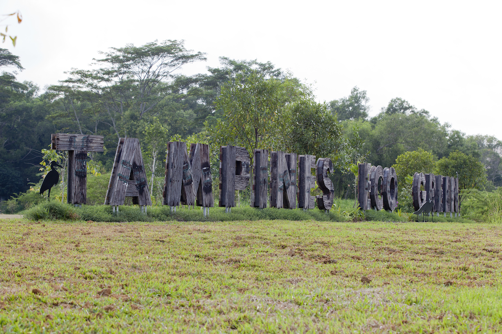

1 / 3

Tampines Eco Green entrance
2 / 3

Bird Viewing
3 / 3

Wide green paths
Tampines Eco Green is an eco-friendly park that offers a sanctuary for flora and fauna and a place for nature recreation.
With various natural habitats such as open grasslands, freshwater wetlands and a secondary rainforest, the park is a haven for biodiversity and a great place for visitors to enjoy the best of nature.
Hiking trails within the park allow nature lovers to discover an array of flora and fauna and experience nature in all its glory. Linked via park connectors from Tampines Biking Trail and Sun Plaza Park, cyclists need to push or park their bike at the available bicycle stands at the main entrance of Tampines Eco Green and explore its beauty while enjoying the natural beauty of the park.